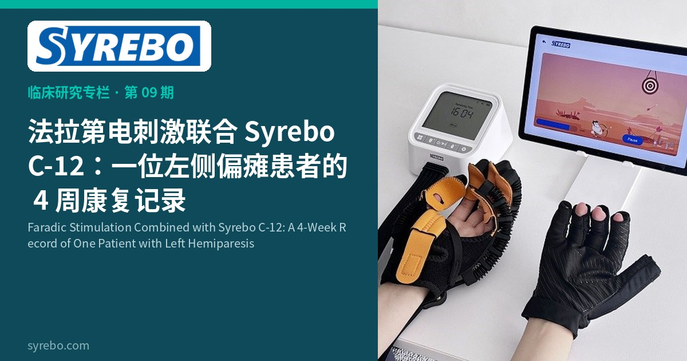

Columna de investigación clínica Syrebo
Lecturas basadas en la evidencia sobre la rehabilitación robótica de la mano


La rehabilitación de la hemiparesia tras un ictus a veces combina dos enfoques: la estimulación eléctrica para activar los músculos y una mano robótica para mover los dedos. Este informe de caso documenta en su totalidad una intervención combinada de este tipo.
El paciente, un hombre de 60 años con hemiparesia izquierda, comenzó la intervención 3 meses y 2 semanas después del ictus. El protocolo combinó la estimulación eléctrica farádica con la rehabilitación robótica de la mano Syrebo C-12, durante 4 semanas a razón de 5 sesiones por semana.
El valor de un informe de caso reside en documentar una intervención combinada tal como se aplicó realmente: cómo se utilizaron juntos la estimulación eléctrica y el entrenamiento robótico de la mano, bajo orientación profesional, en la rehabilitación diaria de un paciente con hemiparesia. Para los clínicos y las familias que consideran un enfoque combinado similar, este registro ofrece un punto de referencia genuino.
Intervención combinada en un solo caso; los cambios no pueden atribuirse a un solo dispositivo y los resultados no son generalizables.